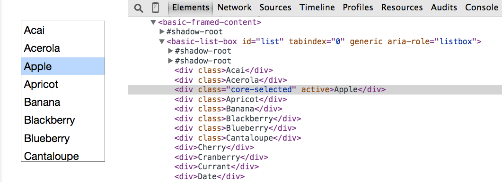

Hi, SmashingConf Whistler!
What if you couldn't:
- use a mouse
- see the screen
- perceive colors
- hear audio content
- do ski ballet
?
Web Accessibility
Everyone can perceive, understand, navigate, and interact with the Web, and they can contribute to the Web.
Accessibility is about people.

A Web for Everyone
Marcy Sutton, Developer @Substantial
Material Design Accessibility Engineer
Today!
- Assumptions
- Web Components
- Accessible UIs
- Resources
Assumptions about Users
- Disabled people cook.
- Disabled people travel.
- Disabled people work out.
- Disabled people take pictures.
- Disabled adults drink whiskey.
“The tree is done! Pic courtesy of BlindChick photography…bad focus is strictly the blind girl’s fault.” Sarah Outwater on Facebook
Disabled people are
early adopters.
Tech Lifelines
- Text-to-speech
- Braille/tactile devices
- Social networks
- Live captioning
- Accessible maps
- Image recognition
Recipe Component
The Accessibility Tree
Web Components
- Reusable widgets of your dreams
- Custom elements
- Encapsulation
- Reinventing the Web
- <div> soup
- Dependency hell
- BRB jumping out window
Is your element accessible?
- Can you use your element with the keyboard only?
- Can you use your element with a screen reader?
- Can your element work without sound?
- Can it work without color?
- Can your element work with high-contrast mode enabled?
Revisiting the Recipe Component
Like a boss.
"Interactive" means something.
cursor: pointer;element.on('click')outline: none;
Enable the keyboard!
<core-item ng-click="nope()"></core-item>
<button ng-click="yep()"></button>
<paper-button role="button" tabIndex="0"
ng-click="woohoo()"
ng-keypress="woohoo()">
</paper-button>
"Semantic" means something.
Adding semantics
to components
- Extend native elements
- Use native child elements
- Add ARIA attributes
People Will Travel
Accessible Scroll UI Demo
Sass
.navlist--main>li>a {
color: #fff;
display: block
}
.no-touch .navlist--main>li>a:hover {
text-decoration: underline
}
Sass (corrected)
.navlist--main>li>a {
color: #fff;
display: block
}
.no-touch .navlist--main>li>a:hover,
.no-touch .navlist--main>li>a:focus {
text-decoration: underline
}
Handling Focus
$scope.$watch('airportIsSelected', function(newValue){
if(newValue){
$scope.pickerIsVisible = true;
$('html,body').animate({
scrollTop: peoplePicker.offset().top
}, 600);
peoplePicker.find('button').first().focus();
$rootScope.$broadcast('statusUpdated', self.selectedAirport);
}
});
Alerting the User
<live-region level="polite"></live-region>
function liveRegionDirective($scope, $element, $attrs) {
element.attr({
'role' : 'region',
'aria-live': $attrs.level
});
$scope.$on('statusUpdated', function(scope, message) {
$element.html(message.text);
});
}
Whiskey Business

Responsive Images
<div role="img" style="background: url(corner-creek.gif)"
aria-label="Corner Creek Kentucky Bourbon"></div>
[role=img] {
background-size: cover;
display: block;
}
Responsive Images (alt)
<figure class="notes-table">
<div class="visuallyhidden">
</div>
</figure>
/* fancy media query stuff here */
.notes-table {
background-image: url(flavor-notes-table.png);
}
Headings
Focus Management
class App.FocusManager
constructor: ->
$('body').on 'focusin', (e) =>
@oldFocus = $(e.target)
App.bind 'rendered', (e) =>
return unless @oldFocus
@_focusById() if @oldFocus.data('focus-id')
_focusById: ->
focusId = @oldFocus.data('focus-id')
newFocus = $("[data-focus-id=#{focusId}]")
MyApp.focus(newFocus) if newFocus
Tools
- Your Keyboard
- Android: TalkBack
- iOS: VoiceOver
- Mac: VoiceOver
- Windows: JAWS, WindowEyes, NVDA
Resources
It's up to us to make the Web more accessible.
Include accessibility on every project.
Thanks, Smashing Conf!